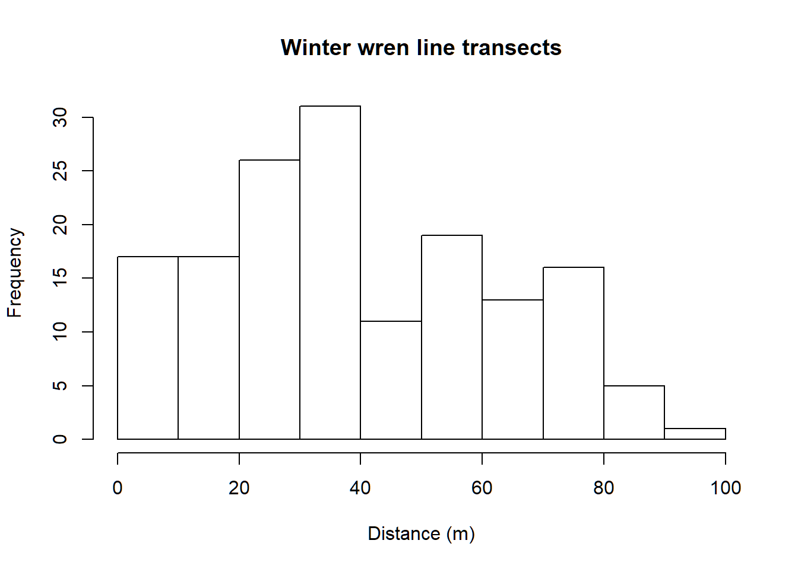
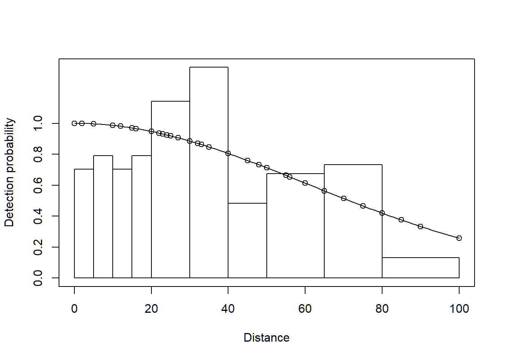
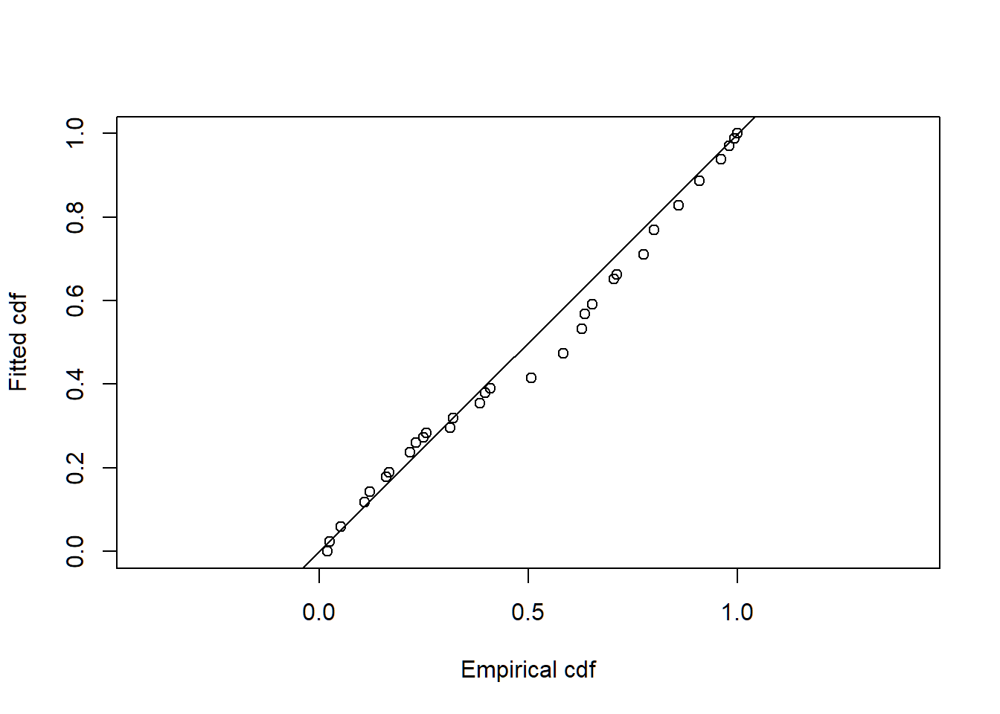
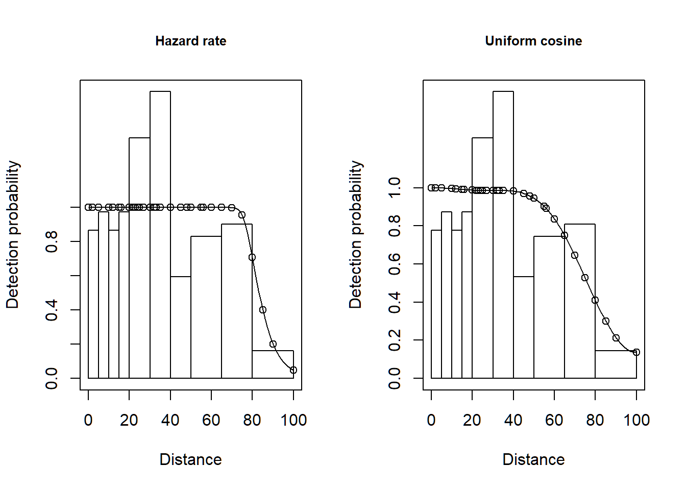

Line transect density estimation
In this exercise, we use R (R Core Team 2019) and the Distance package (Miller 2017, Miller et al. 2019) to fit different detection function models to line transect survey data of winter wren (Troglodytes troglodytes) density and abundance. These data were part of a study described by Buckland (2006).
If you wish to see the code as part of this vignette, click “show all code” in the code button top right. Likewise, there is code provided in a solution at the bottom of the vignette (Solution discussion), to examine after you have made your own efforts.
1 Objectives
- Import a data file
- Fit a basic detection function using the
dsfunction - Plot and examine a detection function
- Fit different detection function forms.
2 Survey design
Nineteen line transects were walked twice (Figure 1).

Montrave study area; diagonal lines indicate line transects walked to generate these data.
The fields of the wren_lt data set are:
- Region.Label - identifier of regions: in this case there is only one region and set to ‘Montrave’ required field
- Area - size of the study region (hectares): 33.2ha
- Sample.Label - line transect identifier (numbered 1-19) required field
- Effort - length of the line transects (km) required field
- object - unique identifier for each detected winter wren
- distance - perpendicular distance (metres) to each detection required field
- Study.Area - this is the name of the study, ‘Montrave 4’
3 Make the data available for R session
This command assumes that the Distance package has been installed on your computer. The R workspace wren_lt contains detections of winter wrens from the line transect surveys of Buckland (2006).
library(Distance)
data(wren_lt)The effort, or transect length has been adjusted to recognise each transect is walked twice. Examine the first few rows of wren_lt using the function head()
head(wren_lt)The object wren_lt is a dataframe object made up of rows and columns.
sum(!is.na(wren_lt$distance))The code above determines the number of detection distances that are not missing. Why might there be rows in our data where detection distance is missing? Distance would have to be recorded as missing for rows representing transects on which there were no detections. The transect and its effort would need to appear in the data, but without detections, the perpendicular distance would be recorded as missing (NA).
4 Examine the distribution of detection distances
Gain familiarity with the perpendicular distance data using the hist() function
hist(wren_lt$distance, xlab="Distance (m)", main="Winter wren line transects")Note that there appears to be too few detections between 0 and 20m, and too many detections between 20m and 40m. This may be evidence of evasive movement by winter wrens; see further discussion of this in the solution.
5 Specify unit conversions
A guaranteed way to produce incorrect results from your analysis is to misspecify the units distances are measured. The
dsfunction has an argumentconvert.unitswhere the user provides a value to report density in proper units. Providing an incorrect value will result in estimates that are out by orders of magnitude.
We can choose the units in which winter wren density is to be reported, we choose square kilometre. How to transmit this information to the ds function?
The answer is another function convert_units. Arguments to this function are
- distance_units
- units of measure for perpendicular/radial distances
- effort_units
- units of measure for effort (NULL for point transects)
- area_units
- units of measure for the study area.
Specify the correct arguments to this function for the winter wren data set. Note: units are specified as quoted strings, singular rather than plural; e.g. “meter” rather than “meters”
conversion.factor <- convert_units("meter", "kilometer", "hectare")6 Fitting a simple detection function model with ds
Detection functions are fitted using the ds function and this function requires a data frame to have a column called distance. We have this in our nests data, therefore, we can simply supply the name of the data frame to the function along with additional arguments.
Details about the arguments for this function:
key="hn"- fit a half-normal key detection function
adjustment=NULL- do not include adjustment terms
convert.units=conversion.factor- required because, for this example, the perpendicular distances are in metres and the line transect lengths are in kilometer - this argument converts the perpendicular distance measurements from metres to kilometer. Our density estimates will be reported in number of birds per hectare.
wren.hn <- ds(data=wren_lt, key="hn", adjustment=NULL,
convert.units=conversion.factor)On calling the ds function, information is provided to the screen reminding the user what model has been fitted and the associated AIC value. More information is supplied by applying the summary() function to the object created by ds().
summary(wren.hn)Visually inspect the fitted detection function with the plot() function, specifying the cutpoints histogram with argument breaks:
cutpoints <- c(0,5,10,15,20,30,40,50,65,80,100)
plot(wren.hn, breaks=cutpoints)Continue to note the presence of evasive movement in this plot of the fit of detection function to the observed data.
7 Specifying different detection functions
Detection function forms and shapes, are specified by changing the key and adjustment arguments.
The options available for key detection functions are:
- half normal (
key="hn") - default - hazard rate (
key="hr") - uniform (
key="unif")
The options available for adjustment terms are:
- no adjustment terms (
adjustment=NULL) - cosine (
adjustment="cos") - default - Hermite polynomial (
adjustment="herm") - Simple polynomial (
adjustment="poly")
To fit a uniform key function with cosine adjustment terms, use the command:
wren.unif.cos <- ds(wren_lt, key="unif", adjustment="cos",
convert.units=conversion.factor)When this line of code is executed, multiple models will be fitted, succssively adding addition adjustment terms. When the model with four adjustment terms is fit, an error message is returned; but a uniform key with 3 cosine adjustments is fitted and contained in the returned object.
AIC model selection will be used to fit adjustment terms of up to order 5.
To fit a hazard rate key function with simple polynomial adjustment terms, then use the command:
wren.hr.poly <- ds(wren_lt, key="hr", adjustment="poly",
convert.units=conversion.factor)8 Model comparison
Each fitted detection function produces a different estimate of winter wren abundance and density. The estimate depends upon the model chosen. The model selection tool for distance sampling data is AIC.
AIC(wren.hn, wren.hr.poly, wren.unif.cos)8.1 Absolute goodness of fit
In addition to the relative ranking of models provided by AIC, it is also important to know whether selected model(s) actually fit the data. The model is the basis of inference, so it is dangerous to make inference from a model that does not fit the data. Goodness of fit is assessed using the function gof_ds. This function by default, reports the goodness of fit assessed by the Cramervon-Mises test along with a quantile-quantile plot showing locations of deviations from good fit. Optionally, a \(\chi^2\) goodness of fit test and a bootstrap version of the Kolomogorov-Smirnov goodness of fit test can be performed.
gof_ds(wren.hr.poly)Even though there may have been evasive movement, the goodness of fit statistics are still sufficient for using detection function models for inference.
9 Model comparison tables
The function summarise_ds_models combines the work of AIC and gof_ds to produce a table of fitted models and summary statistics.
summarize_ds_models(wren.hn, wren.hr.poly, wren.unif.cos,
output="plain")10 References
Buckland ST (2006) Point transect surveys for songbirds: robust methodologies. The Auk 123:345–345. https://doi.org/10.1093/auk/123.2.345
Miller DL (2017) Distance: Distance Sampling Detection Function and Abundance Estimation. R package version 0.9.7. should be 0.9.9 but not on CRAN https://CRAN.R-project.org/package=Distance
Miller DL, Rexstad E, Thomas L, Marshall L, Laake JL (2019) Distance Sampling in R. Journal of Statistical Software 89(1), 1-28. doi:10.18637/jss.v089.i01 http://doi.org/10.18637/jss.v089.i01.
R Core Team (2018) R: A language and environment for statistical computing. R Foundation for Statistical Computing, Vienna, Austria. https://www.R-project.org/
Montrave winter wren density
library(Distance)
data(wren_lt)
head(wren_lt)## Region.Label Area Sample.Label Effort object distance Study.Area
## 1 Montrave 33.2 1 0.416 5 15 Montrave 4
## 2 Montrave 33.2 1 0.416 6 80 Montrave 4
## 3 Montrave 33.2 1 0.416 7 35 Montrave 4
## 4 Montrave 33.2 1 0.416 8 55 Montrave 4
## 5 Montrave 33.2 1 0.416 12 12 Montrave 4
## 6 Montrave 33.2 1 0.416 13 75 Montrave 4nrow(wren_lt)## [1] 156hist(wren_lt$distance, xlab="Distance (m)",
main="Winter wren line transects")
conversion.factor <- convert_units("meter", "kilometer", "hectare")
wren.hn <- ds(data=wren_lt, key="hn", adjustment=NULL,
convert.units=conversion.factor)
summary(wren.hn)##
## Summary for distance analysis
## Number of observations : 156
## Distance range : 0 - 100
##
## Model : Half-normal key function
## AIC : 1418.188
##
## Detection function parameters
## Scale coefficient(s):
## estimate se
## (Intercept) 4.105816 0.1327744
##
## Estimate SE CV
## Average p 0.685037 0.05678866 0.08289868
## N in covered region 227.724931 21.47288594 0.09429308
##
## Summary statistics:
## Region Area CoveredArea Effort n k ER se.ER cv.ER
## 1 Montrave 33.2 193.2 9.66 156 19 16.14907 1.226096 0.07592366
##
## Abundance:
## Label Estimate se cv lcl ucl df
## 1 Total 39.13286 4.399026 0.1124126 31.30227 48.92235 74.24692
##
## Density:
## Label Estimate se cv lcl ucl df
## 1 Total 1.1787 0.1325008 0.1124126 0.9428394 1.473565 74.24692cutpoints <- c(0,5,10,15,20,30,40,50,65,80,100)
plot(wren.hn, breaks=cutpoints)
wren.unif.cos <- ds(wren_lt, key="unif", adjustment="cos",
convert.units=conversion.factor)
wren.hr.poly <- ds(wren_lt, key="hr", adjustment="poly",
convert.units=conversion.factor)
AIC(wren.hn, wren.hr.poly, wren.unif.cos)## df AIC
## wren.hn 1 1418.188
## wren.hr.poly 2 1412.133
## wren.unif.cos 3 1416.433gof_ds(wren.hr.poly)
##
## Goodness of fit results for ddf object
##
## Distance sampling Cramer-von Mises test (unweighted)
## Test statistic = 0.251352 p-value = 0.186646summarize_ds_models(wren.hn, wren.hr.poly, wren.unif.cos,
output="plain")## Model Key function Formula
## 2 wren.hr.poly Hazard-rate ~1
## 3 wren.unif.cos Uniform with cosine adjustment terms of order 1,2,3 <NA>
## 1 wren.hn Half-normal ~1
## C-vM $p$-value Average detectability se(Average detectability) Delta AIC
## 2 0.18664558 0.8445186 0.02445302 0.000000
## 3 0.19992012 0.7566329 0.13932632 4.299942
## 1 0.07693371 0.6850370 0.05678866 6.05502810 Notes regarding the Montrave winter wren data
10 The summary function
Examining the output produced by summary(wren.hn) notice
- number of detections used in fitting
- truncation distances
- AIC score
- parameters of the detection function (on a natural log scale)
- estimated probability of detection within the truncation distance
- estimated number of objects in the area covered by survey effort
- summary of the survey (effort, number of transects, number of detections)
- encounter rate and its variability
- estimated abundance and density within the study area
- and measures of precision
- if there are strata, estimates are provided for each stratum
- if objects were detected in groups, there are estimates of abundance of groups and of individuals
10 Model selection is not a cookbook
The AIC model selection tools suggest the hazard rate key function is the preferred model. However, examine the shape of the hazard rate detection function in contrast to the uniform cosine fitted detection function.
par(mfrow=c(1,2))
plot(wren.hr.poly, breaks=cutpoints, main="Hazard rate")
plot(wren.unif.cos, breaks=cutpoints, main="Uniform cosine")
par(mfrow=c(1,1))The fellow who gathered these data (Prof Buckland) maintained the shape of the fitted hazard rate detection function is not plausible. Instead, he chose a different model for making inference (Buckland 2006:352):
This is an example of moderating objective model selection tools with common sense and understanding of field procedures.Common Chaffinch and Winter Wren showed some evidence of observer avoidance. For 2 of the 12 data sets, this resulted in a fitted hazard rate detection function with certain detection out to ∼60 m, with an implausibly rapid fall-off beyond 70 m. In these two analyses, a model with a slightly higher AIC value and a more plausible fit to the detection function was selected.